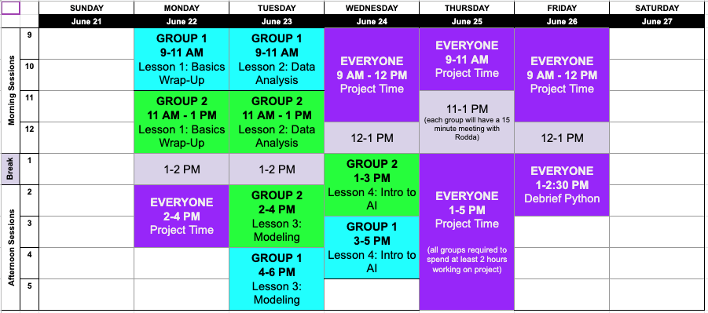

print('Hello World!')
len([1, 2, 3, 4, 5, 6])
input()
args does each function have?def product(x, y):
return x * y
def sum_of_list(l):
to_return = 0 # Tracks the sum of the list
i = 0 # Iterator to iterate through the list
while i < len(l):
to_return += l[i]
i = i + 1
return to_return
def opens a function definition block() to denote the args:if statements, and while loops, the code in the function is indenteddef <name>(<args>): --> code --> (optional) return <to_return>
sum) that:
def sum(x, y):
return x + y
sum(1, 2) # Should be 3
sum(4, -2) # Should be 2
sum(4, 0) # Should be 4
product) that:
* operator, and instead uses the sum function we defined abovedef product(x, y):
to_return = 0
iterator = 0
while iterator < y:
to_return = to_return + x
iterator = iterator + 1
return to_return
product(1, 2) # Should be 2
product(100, 2) # Should be 200
product(2, 100) # Should be 200
product(2, .5) # Should be 1
divisible_by) that:
number, and factor)number is evenly divisble by factor% operator, which returns the remainder of the first operand by the seconddef divisible_by(number, factor):
remainder = number % factor
if remainder == 0:
return True
else:
return False
divisible_by(4, 2) # Should be True
divisible_by(4, 1) # Should be True
divisible_by(15, 3) # Should be True
divisible_by(15, 4) # Should be False
def divisible_by(number, factor):
remainder = number % factor
if remainder == 0:
return True
return False
def divisible_by(number, factor):
return number % factor == 0
big O notation
i = 0
while i < 100:
if i % 2 == 0:
print (i)
i = i + 1
i = 1
while i < 100:
print (i)
i = i + 2
| Worst | Best | Average | |
| Comparisons | \(O(n^2)\) | \(O(n^2)\) | \(O(n^2)\) |
| Swaps | \(O(n)\) | \(O(n)\) | \(O(n)\) |
| Worst | Best | Average | |
| Comparison | \(O(n^2)\) | \(O(n)\) | \(O(n^2)\) |
| Swaps | \(O(n^2)\) | \(O(1)\) | \(O(n^2)\) |
| Worst | Best | Average | |
| Comparison | \(O(n^2)\) | \(O(n)\) | \(O(n^2)\) |
| Swaps | \(O(n^2)\) | \(O(1)\) | \(O(n^2)\) |
| Worst | Best | Average | |
| Comparison | \(O(n^2)\) | \(O(n \log n)\) | \(O(n \log n)\) |
| Swaps | \(O(n^2)\) | \(O(n \log n)\) | \(O(n \log n)\) |
Usually we often also care about how much storage we have to use.
Let's think through this.